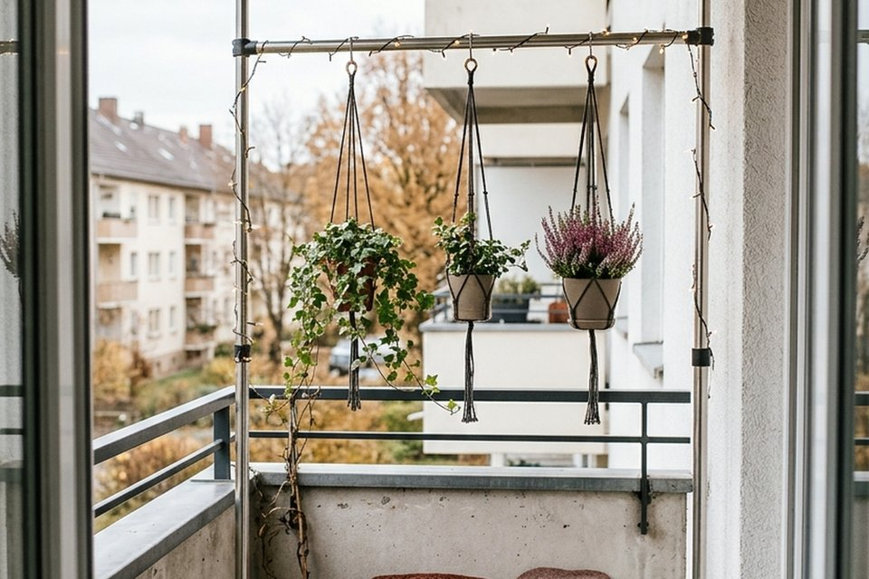

Balkon ohne Bohren: 8 Ideen für Mietwohnungen
In vielen Mietwohnungen darf man in die Fassade nicht bohren. Zum Glück geht fast alles auch ohne: mit Klemmen, Haken, Kabelbindern und freistehenden Möbeln.
Die 8 Ideen
1. Klemmstangen zwischen Boden und Decke
Die Idee aus dem Bild: Zwei Teleskop-Klemmstangen werden zwischen Balkonboden und der Decke (dem Balkon darüber) eingespannt, dazwischen eine Querstange. Daran hängen Pflanzampeln und eine Lichterkette – oder ein Sichtschutz. Funktioniert nur bei überdachten Balkonen. Die Spannung regelmäßig prüfen und nichts Schweres aufhängen.
ca. 60–110 €
2. Balkonkästen mit Geländerhalterung
Kästen mit verstellbaren Haltern werden einfach über das Geländer gehängt.
ca. 8–15 € pro Kasten
3. Sichtschutz mit Kabelbindern
Stoff, Bambus oder Schilf innen am Geländer befestigen: Sichtschutz im Vergleich.
ca. 15–45 €
4. Klapptisch am Geländer
Ein Tisch zum Einhängen braucht weder Bohrlöcher noch Bodenfläche.
ca. 25–60 €
5. Lichterkette mit Kabelbindern oder Klebehaken
Am Geländer mit Kabelbindern, an glatten Flächen mit wetterfesten Klebehaken.
ca. 10–30 €
6. Freistehendes Pflanzregal
Ein Regal an die Wand gelehnt und am Geländer gesichert: Vertikaler Garten.
ca. 40–90 €
7. Sonnenschirm mit Ständer oder Klemm-Markise
Ein Balkonschirm mit Geländerhalter oder eine Klemm-Markise, die ebenfalls zwischen Boden und Decke gespannt wird.
ca. 30–150 €
8. Neuer Boden zum Auslegen
Klickfliesen, Kunstrasen oder Teppich – alles lose verlegt: Balkonboden im Vergleich.
ca. 20–160 €
Übersicht
| Idee | Braucht | ca. Preis |
|---|---|---|
| Klemmstangen | überdachten Balkon | 60–110 € |
| Geländerkästen | Geländer | 8–15 € je Kasten |
| Sichtschutz | Geländer | 15–45 € |
| Geländertisch | Geländer | 25–60 € |
| Lichterkette | – | 10–30 € |
| Pflanzregal | Wandfläche | 40–90 € |
| Schirm / Klemm-Markise | – / Decke | 30–150 € |
| Boden | – | 20–160 € |
Richtwerte für Deutschland, Stand November 2026. Die Preise schwanken je nach Händler und Saison.
Häufige Fragen
Brauche ich für Klemmstangen die Erlaubnis des Vermieters?
Da nichts beschädigt wird, meist nicht. Bei Markisen und allem, was von außen stark sichtbar ist, lohnt sich ein Blick in die Hausordnung.
Halten Klemmstangen bei Wind?
Wenn sie richtig gespannt sind und nur Leichtes daran hängt, ja. Ein großflächiger Sichtschutz fängt Wind wie ein Segel – dann lieber zusätzlich am Geländer sichern.